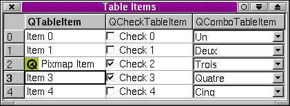

QTable类参考
[表格模块]
QTable类提供了一个灵活的和可编辑的表格部件。
详见……
#include <qtable.h>
继承了QScrollView。
被QDataTable所继承。
所有成员函数的列表。
公有成员
QTable ( QWidget * parent = 0, const char * name = 0 )
QTable ( int numRows, int numCols, QWidget * parent = 0, const char * name = 0 )
enum
SelectionMode { Single, Multi, SingleRow, MultiRow, NoSelection }
virtual void
setItem ( int row, int col, QTableItem * item )
virtual void
setText ( int row, int col, const QString & text )
virtual void
setPixmap ( int row, int col, const QPixmap & pix )
virtual QTableItem *
item ( int row, int col ) const
virtual QString
text ( int row, int col ) const
virtual QPixmap
pixmap ( int row, int col ) const
virtual int
rowPos ( int row ) const
virtual int
rowAt ( int y ) const
virtual void
sortColumn ( int col, bool ascending = TRUE, bool wholeRows = FALSE )
virtual void
takeItem ( QTableItem * i )
virtual QWidget *
cellWidget ( int row, int col ) const
virtual QRect
cellRect ( int row, int col ) const
virtual void
paintCell ( QPainter * p, int row, int col, const QRect & cr, bool selected )
virtual void
paintCell ( QPainter * p, int row, int col, const QRect & cr, bool selected, const QColorGroup & cg )
virtual void
paintFocus ( QPainter * p, const QRect & cr )
公有槽
virtual void
swapRows ( int row1, int row2, bool swapHeader = FALSE )
virtual void
swapColumns ( int col1, int col2, bool swapHeader = FALSE )
virtual void
swapCells ( int row1, int col1, int row2, int col2 )
virtual void
insertRows ( int row, int count = 1 )
virtual void
removeRows ( const QMemArray<int> & rows )
virtual void
editCell ( int row, int col, bool replace = FALSE )
信号
void
clicked ( int row, int col, int button, const QPoint & mousePos )
void
doubleClicked ( int row, int col, int button, const QPoint & mousePos )
void
pressed ( int row, int col, int button, const QPoint & mousePos )
属性
保护成员
enum
EditMode { NotEditing, Editing, Replacing }
virtual void
drawContents ( QPainter * p, int cx, int cy, int cw, int ch )
virtual void
paintEmptyArea ( QPainter * p, int cx, int cy, int cw, int ch )
virtual QWidget *
createEditor ( int row, int col, bool initFromCell ) const
virtual QWidget *
beginEdit ( int row, int col, bool replace )
virtual void
endEdit ( int row, int col, bool accept, bool replace )
int
indexOf ( int row, int col ) const
保护槽
详细描述
QTable类提供了一个灵活的和可编辑的表格部件。
鉴于所提供功能的复杂性，QTable确实包含了许多API，尽管如此，它还是易于使用的。QTable提供的功能可以处理标题（headers）、行列（rows和columns）、单元格（cells）和选中区域（selections）。QTable还含有内嵌编辑（in-place editing）和拖放（drag和drop），以及一批有用的信号。QTable有效率地支持很大的表格，例如有百万行乘百万列单元格的表格也毫无问题。QTable内存使用节约，未用的单元格没有内存开销。
QTable *table = new QTable( 100, 250, this );
table->setPixmap( 3, 2, pix );
table->setText( 3, 2, "A pixmap" );
第一行代码构造了一个指定行列数目的表格。然后我们在同一个单元格插入一个象素映射（pixmap）和一些文本，象素映射在文本的左边。QTable的单元格可以使用QTableItem、QComboTableItem或者QCheckTableItem来填充。缺省情况下显示行号的垂直标题在表格的左部，而显示列标的水平标题在上部。（显示的数字从1开始，尽管在QTable内部行列都是由零开始计数。）
如果你想使用鼠标跟踪（mouse tracking），对视口（viewport）调用setMouseTracking(TRUE) （参见QScrollView）。

标题
QTable支持一个标题列，用来显示行号；以及一个标题行，用来显示列标。要设置行列标签（label），需要对由verticalHeader()和horizontalHeader()分别返回的指针使用QHeader::setLabel()。垂直标题显示在表格的左边内，宽度由setLeftMargin()设置。水平标题显示在表格的上边内，高度由setTopMargin()设置。表格的栅格可以通过setShowGrid()来开关。如果要隐藏水平标题，调用hide()，以及setTopMargin( 0 )，以使得标题所在的区域减为零尺寸。
标题标签是通过他们的区域编号（section number）来生成索引的。注意，QHeader关于区域编号的缺省行为为QTable而覆盖（overrided）了。参见下面在“行列”一节讨论行列移动时的相关解释。
行列
行列的尺寸由setRowHeight()和setColumnWidth()设置。如果要使得某行高到足以全部显示最高的表项（item），可以使用adjustRow()。类似地，adjustColumn()使某列宽至全部显示最宽的表项。使用setRowStretchable()和setColumnStretchable()，可以让行高、列宽在表格的高宽变化时自动调整。
行列的隐藏显示可以使用hideRow()、hideColumn()、showRow()和showColumn()。插入新的行列使用insertRows()和insertColumns()。如果你设置setNumRows()或者setNumCols()为比numRows()或者numCols()还要大，额外的行列会添加在下面（行）或者右边（列）。已有的行列可以使用removeRow()和removeColumn()来删除，多个行列则是removeRows()和removeColumns()。
使用rowMovingEnabled()和columnMovingEnabled()，行列可以设置为可移动的，也就是说，用户能够拖动放置他们。基于性能原因，QHeader区域编号的缺省行为被QTable重写。现在在QTable中，当一行或者一列被拖放，其区域编号也变为新的位置。这样，QHeader的区域（section）和索引就没有不同了。QTable中的QHeader类没有提供独立于用户界面次序的索引机制。
表格可以使用sortColumn()来排序。如果setSorting()设置为TRUE，用户可以点击列标题以对该列排序。行之间可以用swapRows()来交换；列则是swapColumns()；而单元格则是swapCells()。
对于可编辑的表格（参见setReadOnly()），可以使用setRowReadOnly()和setColumnReadOnly()来设置个别行列的只读属性。（单元格是可编辑还是只读取决于其设置和该单元格的QTableItem::EditType。）
焦点所在的行和列分别由currentRow()和currentColumn()返回。
尽管许多QTable函数以行列进行操作，indexOf()函数可以返回一个识别特定单元格的整数。
单元格
表格构造初始，QTable所有的单元格都是空的。
有两种方法来填充表格的单元格。首先也是最简单的方法是使用QTableItem或者QTableItem的子类。第二种方法对很大的稀疏表格有用，它不使用QTableItem，而是自己重新实现一些函数。我们下面按顺序看看这两种方法。
在单元格内放置一个字符串，使用setText()。这个函数将为还不存在的单元格生成一个新的QTableItem，然后显示里面的文本。缺省情况下表项的部件是QLineEdit。使用setPixmap()，单元格也可以放置一个象素映射，而且也在必要时生成表项。单元格可以同时包括象素映射和文本，象素映射显示在文本的左边。另一种方法是构造一个QTableItem或者QTableItem的子类，设置其属性，然后使用setItem()以插入到单元格中。
如果需要含有组合框的单元格，使用QComboTableItem类；类似地，含有多选框的单元格要用QCheckTableItem类。这些表项的样子和行为都类似组合框或者多选框，然而极少耗费内存。
for ( int j = 0; j < numRows; ++j )
table.setItem( j, 1, new QCheckTableItem( &table, "Check me" ) );
上面的例子中，我们生成了一列QCheckTableItem，用setItem()插入到表格中。
QTable拥有其QTableItem的所有权，在自己被销毁时也会删除他们。你可以使用takeItem()来获得一个表项的所有权，用它来在单元格之间移动单元格的内容，不论是不是属于同一个表格。（也参见swapCells()）。
QTableItem中的文本，与QComboTableItem和QCheckTableItem中的值一样，其内嵌编辑都是自动进行的。单元格可以是可编辑或者只读的，参见QTableItem::EditType。如果要精细地控制编辑，参见beginEdit()和endEdit()。
使用item()，可以把单元格的内容作为一个QTableItem取得；类似地，使用text()作为字符串取得，使用pixmap()作为象素映射取得（如果有的话）。单元格的范围矩形由cellGeometry()来给定。使用updateCell()来重绘单元格，例如在使用clearCell()删除单元格之后，清除其显示。可以使用ensureCellVisible()来迫使表格滚动至显示某个特定单元格的位置。isSelected()函数表明一个单元格是否被选中。
可以使用setCellWidget()来使你自己的部件代替单元格的部件，但是写QTableItem的子类可能更为简便。单元格的部件（如果有的话）可以使用clearCellWidget()来删去。
大表格
对于大稀疏表格，使用QTableItem或者其他部件的效率不高。解决的办法是：如应该表现的那样绘制单元格，在需求时生成和销毁单元格编辑器。
这种方法需要你重新实现几个函数。重写paintCell()以显示你的数据，createEditor()和setCellContentFromEditor()以方便内嵌编辑。重要的是，重写resizeData()为空，以防止QTable试图生成一个大数组。还需要重写item()、setItem()、clearCell()，和insertWidget()、cellWidget()和clearCellWidget()。几乎所有情况下（像排序、删除和插入行列等）你必须重写swapRows()、swapCells()和swapColumns()，包括标题操作。
如果你用一个QTableItem和QWidget的字典来表述活动的单元格，也就是说，只保存了对实际使用的单元格的引用，大部分函数可以用一行代码来实现。（参见table/bigtable/main.cpp的例子。）
更多单元格的信息参见QTableItem文档。
选中区域
QTable支持单一选中区域、多重选中区域（多个单元格）和无选中区域。选中模式由setSelectionMode()设置。使用isSelected()来判断一个特定的单元格是否被选中，而isRowSelected()和isColumnSelected()则是判断行、列。
QTable支持多重选中区域。你可以使用addSelection()来在编程中选择单元格。选中区域的个数由numSelections()给出。当前选中区域由currentSelection()返回。可以使用removeSelection()来删去一个选中区域，和clearSelection()来删去所有的选中区域。选中区域是QTableSelection对象。
信号
当用户点击一个单元格时，信号currentChanged()被发送。你也可以连接到低层次的信号clicked()、doubleClicked()和pressed()上。如果用户改变了选中区域，信号selectionChanged()被发送；类似地，单元格值改变将发送valueChanged()信号。如果右键单击（或者按下平台特定的键序列），信号contextMenuRequested()被发送。如果用户放置了一个拖动或者一个对象，信号dropped()与放置事件（drop event）一起被发送。
也参见高级部件。
成员类型文档
QTable::EditMode
- QTable::NotEditing - 当前没有被编辑的单元格。
- QTable::Editing - 当前有一个单元格被编辑。编辑器使用单元格的原内容为初始值。
- QTable::Replacing - 当前有一个单元格被编辑。编辑器没有使用单元格的原内容为初始值。
QTable::FocusStyle
指明当前单元格（焦点所在）如何被绘制。
- QTable::FollowStyle - 当前单元格按照当前的风格（style）被绘制，而且如果当前单元格在选中区域内，其背景也绘制为选中。
- QTable::SpreadSheet - 当前单元格按照在电子表格里被绘制。这意味着，单元格由包围它的一个黑色矩形所指示出来，而且其背景也总是使用部件的底色——即使被选中。
QTable::SelectionMode
- QTable::NoSelection - 用户不能选中单元格。
- QTable::Single - 用户只能选中一个单一区域的单元格。
- QTable::Multi - 用户可以选中多重区域的单元格。
- QTable::SingleRow - 用户一次选中一行（总是当前表项所在的那一行）。
- QTable::MultiRow - 用户可以选中多行。
成员函数文档
QTable::QTable ( QWidget * parent = 0, const char * name = 0 )
生成一个空表格对象，命名为name，作为parent的子部件。
如果使用QTableItem，在填充表格前要调用setNumRows()和setNumCols()以设置表格尺寸。
也参见QWidget::clearWFlags()和Qt::WidgetFlags。
QTable::QTable ( int numRows, int numCols, QWidget * parent = 0, const char * name = 0 )
构造空表格，命名为name，行数为numRows，列数为numCols，是parent的子部件。
如果使用QTableItem填充表格，可以生成QTableItem、QComboTableItem和QCheckTableItem表项并且使用setItem()插入到表格中。（使用QTableItem的另外一种方法可参见关于大表格的注意事项。）
也参见QWidget::clearWFlags()和Qt::WidgetFlags。
QTable::~QTable ()
解构器（Destructor）。删除QTable对象使用的所有资源，包括所有的QTableItem及其部件。
void QTable::activateNextCell () [virtual protected]
用来在内嵌编辑使用回车键完成后，激活下一个单元格。
缺省行为是由上到下，也就是说，移到当前编辑单元格的下方的单元格。如果需要不同的响应行为，例如由左至右，需要重写这个函数。
int QTable::addSelection ( const QTableSelection & s ) [virtual]
给表格增加一个由s所描述的选中区域，返回其个数，在选中区域非法时返回-1。
切记调用QTableSelection::init()和QTableSelection::expandTo()以使得选中区域合法（也参见QTableSelection::isActive()）。
也参见numSelections()、removeSelection()和clearSelection()。
void QTable::adjustColumn ( int col ) [virtual slot]
调整col列的大小，以使得列宽足以显示该列最宽的表项。
也参见adjustRow()。
已在QDataTable中重新实现。
void QTable::adjustRow ( int row ) [virtual slot]
调整row行的大小，以使得行高足以显示该行最高的表项。
也参见adjustColumn()。
QWidget * QTable::beginEdit ( int row, int col, bool replace ) [virtual protected]
用来启动在row、col的单元格的编辑器。通过生成一个编辑器（调用createEditor()）和使用setCellWidget()把单元格的编辑器设置为新生成的编辑器，实现编辑过程。（编辑完成后，调用endEdit()以把单元格内容替换为编辑器的结果。）如果replace为TRUE，编辑器会以单元格内容（如果有的话）为初始值，也就是说，用户来修改原来单元格的内容；否则，用户将输入新的数据。
也参见endEdit()。
QRect QTable::cellGeometry ( int row, int col ) const [virtual]
以内容坐标（content coordinates）返回在row、col的单元格的范围矩形（bounding rectangle）。
QRect QTable::cellRect ( int row, int col ) const [virtual]
返回在单元格坐标系统中row、col单元格的几何结构（geometry）。在paintCell()时使用方便。等价于QRect( QPoint(0,0)、cellGeometry( row, col)。size() );
也参见cellGeometry()。
例子：chart/setdataform.cpp。
QWidget * QTable::cellWidget ( int row, int col ) const [virtual]
返回在row、col的单元格中所设置的部件，如果未设置则返回0。
如果不使用QTableItem，需要重写本函数：参见关于大表格的注意事项。
也参见clearCellWidget()和setCellWidget()。
例子：chart/setdataform.cpp。
void QTable::clearCell ( int row, int col ) [virtual]
删去在row、col的QTableItem。
如果不使用QTableItem，需要重写本函数：参见关于大表格的注意事项。
void QTable::clearCellWidget ( int row, int col ) [virtual]
删去在row、col的单元格中所设置的部件（如果有的话）。
如果不使用QTableItem，需要重写本函数：参见关于大表格的注意事项。
本函数删去在row、col坐标的部件。注意：部件不是立即被删去，而是对部件调用QObject::deleteLater()以避免时序问题。
也参见cellWidget()和setCellWidget()。
void QTable::clearSelection ( bool repaint = TRUE ) [slot]
清除所有选中区域，如果repaint为TRUE则重绘适当的区域。
也参见removeSelection()。
void QTable::clicked ( int row, int col, int button, const QPoint & mousePos ) [signal]
当鼠标按键button被点击时，本信号被发送。事件发生所在的单元格在row、col，鼠标位置在mousePos结构里。
例子：chart/setdataform.cpp。
int QTable::columnAt ( int x ) const [virtual]
返回在位置x的列的序数。x必须以内容坐标的形式给出。
也参见columnPos()和rowAt()。
void QTable::columnClicked ( int col ) [virtual protected slot]
当列col被点击时调用。缺省的实现是如果sorting()为TRUE则对该列排序。
void QTable::columnIndexChanged ( int section, int fromIndex, int toIndex ) [virtual protected slot]
当列的顺序将被改变时调用，也就是说，当用户从fromIndex到toIndex移动列标题section的时候。
如果要编程上改变列的顺序，可以调用swapRows()或者swapColumns()。
也参见QHeader::indexChange()和rowIndexChanged()。
bool QTable::columnMovingEnabled () const
如果用户可以移动列，返回TRUE；否则返回FALSE。详情参见"columnMovingEnabled"属性。
int QTable::columnPos ( int col ) const [virtual]
以内容坐标的形式返回列col的x坐标。
也参见columnAt()和rowPos()。
int QTable::columnWidth ( int col ) const [virtual]
返回列col的宽度。
也参见setColumnWidth()和rowHeight()。
void QTable::columnWidthChanged ( int col ) [virtual protected slot]
无论何时列col的宽度改变，都应该调用本函数。它更新受影响的各个列的几何特性，重绘表格以反映所做的改变。
void QTable::contentsDragEnterEvent ( QDragEnterEvent * e ) [virtual protected]
本事件处理者（event handler）当QTable对象接收到一个QDragEnterEvent e时调用，也就是说，当用户按下鼠标按键以拖拉什么东西的时候。
焦点移到QDragEnterEvent所发生的单元格处。
由QScrollView处重新实现。
void QTable::contentsDragLeaveEvent ( QDragLeaveEvent * e ) [virtual protected]
本事件处理者当一个拖拉动作伴随事件e离开这个QTable对象时调用。
由QScrollView处重新实现。
void QTable::contentsDragMoveEvent ( QDragMoveEvent * e ) [virtual protected]
本事件处理者当QTable对象接收到一个QDragMoveEvent e时调用，也就是说，当用户确实拖拽了鼠标的时候。
焦点移到QDragMoveEvent所发生的单元格处。
由QScrollView处重新实现。
void QTable::contentsDropEvent ( QDropEvent * e ) [virtual protected]
本事件处理者当用户以在这个QTable上放置什么东西来结束一次拖放，并从而触发了这个放置事件e的时候调用。
由QScrollView处重新实现。
void QTable::contextMenuRequested ( int row, int col, const QPoint & pos ) [signal]
当用户用鼠标右键（或者一个系统特定键盘键）调用上下文菜单（context menu）时，本信号被发送。事件发生的单元格在row、col处。pos是上下文菜单在全局坐标系统中的出现位置。
QWidget * QTable::createEditor ( int row, int col, bool initFromCell ) const [virtual protected]
返回一个部件，可以用作在row、col处的单元格的内容编辑器。
若initFromCell为TRUE，该编辑器用于编辑此单元格的当前内容（这样编辑器部件就应该使用该内容作为初始值）。若initFromCell为FALSE，单元格的内容被用户在本函数生成的部件中新输入的内容所替代。
缺省的功能描述如下：如果initFromCell为TRUE，或者单元格包含一个QTableItem并且该表项的QTableItem::isReplaceable()为FALSE，那么该单元格被要求生成一个适当的编辑器（使用QTableItem::createEditor()）。否则QLineEdit被用作编辑器。
如果要为单元格创建你自己的编辑器，需要实现定制的QTableItem子类和重写QTableItem::createEditor()。
如果不使用QTableItem，而且不想使用QLineEdit作为缺省的编辑器，需要写QTable的子类和用类似下面的代码重写本函数：
QTableItem *i = item( row, col );
if ( initFromCell || ( i && !i->isReplaceable() ) )
// If we had a QTableItem ask the base class to create the editor
return QTable::createEditor( row, col, initFromCell );
else
return ...(create your editor)
编辑器部件的所有权被传递给调用者。
如果重写了本函数，对于只读的单元格要返回0。你将需要重写setCellContentFromEditor()以得到用户的输入数据。
也参见QTableItem::createEditor()。
int QTable::currEditCol () const [protected]
返回当前被编辑的列。
int QTable::currEditRow () const [protected]
返回当前被编辑的行。
void QTable::currentChanged ( int row, int col ) [signal]
当当前单元格已变为row、col时，本信号被发送。
例子：chart/setdataform.cpp。
int QTable::currentColumn () const
返回当前列。
也参见currentRow()。
例子：chart/setdataform.cpp。
int QTable::currentRow () const
返回当前行。
也参见currentColumn()。
例子：chart/setdataform.cpp。
int QTable::currentSelection () const [virtual]
返回当前选中区域的个数，如果没有则返回-1。
也参见numSelections()。
void QTable::doubleClicked ( int row, int col, int button, const QPoint & mousePos ) [signal]
当鼠标按键button被双击时，本信号被发送。事件发生所在的单元格在row、col，鼠标位置在mousePos结构里。
bool QTable::dragEnabled () const [slot]
如果本函数返回TRUE，则表格支持拖拽。
也参见setDragEnabled()。
QDragObject * QTable::dragObject () [virtual protected]
如果用户对一个选中的单元格按下鼠标键，开始移动（也就是拖拽），并且dragEnabled()为TRUE，本函数被调用，以得到一个拖拽对象。一次使用该对象的拖拽立即开始，除非dragObject()返回0。
缺省情况下本函数返回0。你可以重新实现它，依所选表项来生成一个QDragObject。
也参见dropped()。
void QTable::drawContents ( QPainter * p, int cx, int cy, int cw, int ch ) [virtual protected]
在画具（painter）p上绘制表格内容。本函数已优化，从而只绘制在位置cx、cy的，宽cw象素，高ch象素的裁减矩形内的单元格。
另外，drawContents()高亮显示当前单元格。
由QScrollView处重新实现。
void QTable::dropped ( QDropEvent * e ) [signal]
当表格上发生一次放置事件时，本信号被发送。
e包含了放置事件的信息。
void QTable::editCell ( int row, int col, bool replace = FALSE ) [virtual slot]
开始编辑在row、col处的单元格。
如果replace为TRUE，编辑结束时单元格的内容将被编辑器的内容替代，也就是说，用户将输入新的数据；否则，单元格的当前内容（如果有的话）将在编辑器里被修改。
也参见beginEdit()。
EditMode QTable::editMode () const [protected]
返回当前编辑模式。
void QTable::endEdit ( int row, int col, bool accept, bool replace ) [virtual protected]
当在row、col处的单元格的内嵌编辑被要求停止时，本函数被调用。
如果该单元格未被编辑，或者accept为FALSE，函数返回，单元格的内容保持不变。
如果accept为TRUE，编辑器的内容一定要传递给响应的单元格。如果replace为TRUE，该单元格的内容应该被编辑器的内容替代（这意味着删去该单元格的QTableItem而新建一个）；否则（如果可能的话），
编辑器的内容应该只放到该单元格已经存在的QTableItem中。
如果该单元格的内容应该被替换，或者没有QTableItem，那么setCellContentFromEditor()被调用。否则，对于该单元格的QTableItem，QTableItem::setContentFromEditor()被调用。
最后，clearCellWidget()被调用，以删去编辑器部件。
也参见setCellContentFromEditor()和beginEdit()。
void QTable::ensureCellVisible ( int row, int col )
滚动表格，使得在row、col处的单元格可见。
FocusStyle QTable::focusStyle () const
返回当前（焦点）单元格如何被绘制。详情参见"focusStyle"属性。
void QTable::hideColumn ( int col ) [virtual slot]
隐藏列col。
也参见showColumn()和hideRow()。
void QTable::hideRow ( int row ) [virtual slot]
隐藏行row。
也参见showRow()和hideColumn()。
QHeader * QTable::horizontalHeader () const
返回表格的顶部QHeader。
该标题包含列标。
要修改列标，使用QHeader::setLabel()，例如，
horizontalHeader()->setLabel( 0, tr( "File" ) );
也参见verticalHeader()、setTopMargin()和QHeader。
例子：chart/setdataform.cpp和table/small-table-demo/main.cpp。
int QTable::indexOf ( int row, int col ) const [protected]
返回单一整数，它通过把二维的表格映射为一维数组来标识详细的row和col。
这很有用，例如如果你要使用QIntDict，以把整数映射到稀疏表格中的使用的单元格上。
void QTable::insertColumns ( int col, int count = 1 ) [virtual slot]
在列col处插入count个空列。
也参见insertRows()和removeColumn()。
void QTable::insertRows ( int row, int count = 1 ) [virtual slot]
在行row处插入count个空行。
也参见insertColumns()和removeRow()。
void QTable::insertWidget ( int row, int col, QWidget * w ) [virtual protected]
在内部数据结构里，在row、col处插入部件w。详情参见setCellWidget()的文档。
如果不使用QTableItem，需要重写本函数：参见关于大表格的注意事项。
bool QTable::isColumnReadOnly ( int col ) const
返回列col是否只读。
该列的某个单元格是可编辑还是只读，取决于该单元格的EditType和这个设置：参见QTableItem::EditType。
也参见setColumnReadOnly()和isRowReadOnly()。
bool QTable::isColumnSelected ( int col, bool full = FALSE ) const
如果列col被选中，返回TRUE；否则返回FALSE。
如果full为FALSE（缺省的情况），“列被选中”意味着该列的至少一个单元格被选中；如果full为TRUE，“列被选中”则意味着该列所有的单元格都被选中。
也参见isRowSelected()和isSelected()。
bool QTable::isColumnStretchable ( int col ) const [slot]
如果列col可伸缩，返回TRUE；否则返回FALSE。
也参见setColumnStretchable()和isRowStretchable()。
bool QTable::isEditing () const [protected]
如果EditMode为Editing或者Replacing，返回TRUE。如果EditMode为NotEditing返回FALSE。
也参见QTable::EditMode。
bool QTable::isReadOnly () const
如果表格只读，返回TRUE；否则返回FALSE。详情参见"readOnly"属性。
bool QTable::isRowReadOnly ( int row ) const
返回行row是否只读。
该行的某个单元格是可编辑还是只读，取决于该单元格的EditType和这个设置：参见QTableItem::EditType。
也参见setRowReadOnly()和isColumnReadOnly()。
bool QTable::isRowSelected ( int row, bool full = FALSE ) const
如果行row被选中，返回TRUE；否则返回FALSE。
如果full为FALSE（缺省的情况），“行被选中”意味着该行的至少一个单元格被选中；如果full为TRUE，“行被选中”则意味着该行所有的单元格都被选中。
也参见isColumnSelected()和isSelected()。
bool QTable::isRowStretchable ( int row ) const [slot]
如果行row可伸缩，返回TRUE；否则返回FALSE。
也参见setRowStretchable()和isColumnStretchable()。
bool QTable::isSelected ( int row, int col ) const
如果row、col处的单元格被选中，返回TRUE；否则返回FALSE。
也参见isRowSelected()和isColumnSelected()。
QTableItem * QTable::item ( int row, int col ) const [virtual]
返回QTableItem，它代表着在row、col处的单元格的内容。
如果row或者col超出范围，或者该单元格没有设置内容，item()返回0。
如果不使用QTableItem，需要重写本函数：参见关于大表格的注意事项。
也参见setItem()。
int QTable::numCols () const [virtual]
返回表格中的列数。详情参见"numCols"属性。
在QDataTable处被重新实现。
int QTable::numRows () const [virtual]
返回表格中的行数。详情参见"numRows"属性。
在QDataTable处被重新实现。
int QTable::numSelections () const
返回当前选中区域的数目。
也参见currentSelection()。
void QTable::paintCell ( QPainter * p, int row, int col, const QRect & cr, bool selected, const QColorGroup & cg ) [virtual]
在画具p上绘制在row、col处的单元格。该画具已经被转变为单元格原有的。cr描述了在内容坐标系统中单元格的坐标。
如果selected为TRUE，单元格将高亮显示。
cg是应用来绘制该单元格内容的颜色组。
如果你想绘制定制的单元格内容，例如右对齐的文本，你必须要么重写paintCell()，要么写QTableItem的子类并且重写QTableItem::paint()以完成定制绘制。
如果你想使用QTableItem的子类，例如用来保存数据结构，那么重写QTableItem::paint()也许最合适。对于你要立即绘制的数据，例如从数据库中得到的数据，则可能最好是重写paintCell()。注意，如果你重写paintCell()，也就是说不使用QTableItems，你就必须重写其他一些函数：参见关于大表格的注意事项。
注意，缺省情况下为提高效率，画具并没有裁剪。如果你需要裁剪，使用如下代码：
p->setClipRect( cellRect(row, col), QPainter::CoordPainter );
//... your drawing code
p->setClipping( FALSE );
void QTable::paintCell ( QPainter * p, int row, int col, const QRect & cr, bool selected ) [virtual]
这是一个重载的成员函数，为便利而提供。其行为本质上类似上一个函数。
使用另外的那个paintCell()函数。本函数只是为了反向兼容性。
void QTable::paintEmptyArea ( QPainter * p, int cx, int cy, int cw, int ch ) [virtual protected]
本函数以画具p的背景色，填充从cx、cy位置开始的，宽cw象素，高ch象素的矩形。
paintEmptyArea()被drawContents()调用，以擦除或者填充未用区域。
void QTable::paintFocus ( QPainter * p, const QRect & cr ) [virtual]
绘制当前单元格的焦点矩形（参见currentRow()、currentColumn()）。
画具p已经被转变为单元格原有的，cr则指定了以内容坐标形式的单元格几何特性。
QPixmap QTable::pixmap ( int row, int col ) const [virtual]
返回为在row、col处的单元格设置的象素映射，如果该单元格不含象素映射，返回无效象素映射（null-pixmap）。
也参见setPixmap()。
例子：chart/setdataform.cpp。
void QTable::pressed ( int row, int col, int button, const QPoint & mousePos ) [signal]
当鼠标按键button被按下时，本信号被发送。事件发生所在的单元格在row、col，鼠标位置在mousePos结构里。
void QTable::removeColumn ( int col ) [virtual slot]
删去列col，并且删除其所有单元格，包括单元格中可能有的任何表项和部件。
也参见removeColumns()、hideColumn()、insertColumns()和removeRow()。
void QTable::removeColumns ( const QMemArray<int> & cols ) [virtual slot]
删去数组cols中的列，并且删除其所有单元格，包括单元格中可能有的任何表项和部件。
传入的数组必须只包含合法的列（在0到numCols() - 1的范围内），没有重复，按升序排列。
也参见removeColumn()、insertColumns()和removeRows()。
void QTable::removeRow ( int row ) [virtual slot]
删去行row，并且删除其所有单元格，包括单元格中可能有的任何表项和部件。
也参见hideRow()、insertRows()、removeColumn()和removeRows()。
void QTable::removeRows ( const QMemArray<int> & rows ) [virtual slot]
删去数组rows中的行，并且删除其所有单元格，包括单元格中可能有的任何表项和部件。
传入的数组必须只包含合法的行（在0到numRows() - 1的范围内），没有重复，按升序排列。
也参见removeRow()、insertRows()和removeColumns()。
void QTable::removeSelection ( const QTableSelection & s ) [virtual]
如果表格中有选中区域s，该选中区域从表格中被删去。
也参见addSelection()和numSelections()。
void QTable::removeSelection ( int num ) [virtual]
这是一个重载的成员函数，为便利而提供。其行为本质上类似上一个函数。
从表格中删去编号为num的选中区域。
也参见numSelections()、addSelection()和clearSelection()。
void QTable::repaintSelections ()
重绘所有的选中区域。
void QTable::resizeData ( int len ) [virtual protected]
当QTable的内部数组需要调整大小至len个元素时被调用。
如果不使用QTableItem，需要重写本函数为空方法以免浪费内存。更多详情参见关于大表格的注意事项。
int QTable::rowAt ( int y ) const [virtual]
返回在位置y的行的序数。y必须以内容坐标的形式给出。
也参见rowPos()和columnAt()。
int QTable::rowHeight ( int row ) const [virtual]
返回行row的高度。
也参见setRowHeight()和columnWidth()。
例子：table/small-table-demo/main.cpp。
void QTable::rowHeightChanged ( int row ) [virtual protected slot]
无论何时行row的宽度改变，都应该调用本函数。它更新受影响的各个行的几何特性，重绘表格以反映所做的改变。
void QTable::rowIndexChanged ( int section, int fromIndex, int toIndex ) [virtual protected slot]
当行的顺序将被改变时调用，也就是说，当用户从fromIndex到toIndex移动行标题section的时候。
如果要编程上改变行的顺序，可以调用swapRows()或者swapColumns()。
也参见QHeader::indexChange()和columnIndexChanged()。
bool QTable::rowMovingEnabled () const
如果用户可以移动行，返回TRUE；否则返回FALSE。详情参见"rowMovingEnabled"属性。
int QTable::rowPos ( int row ) const [virtual]
以内容坐标的形式返回行row的y坐标。
也参见rowAt()和columnPos()。
QTableSelection QTable::selection ( int num ) const
返回编号为num的选中区域，或者一个空QTableSelection，如果num超出范围的话（参见QTableSelection::isNull()）。
void QTable::selectionChanged () [signal]
无论何时选中区域改变，本信号被发送。
也参见QTableSelection。
SelectionMode QTable::selectionMode () const
返回当前选中模式。详情参见"selectionMode"属性。
void QTable::setCellContentFromEditor ( int row, int col ) [virtual protected]
用来以在row、col处的单元格的编辑器的内容，替换该单元格内容。如果该单元格已经有一个QTableItem，则先被删去（参见clearCell()）。
例如如果你想依编辑器的内容来生成不同的QTableItem，就需要重写本函数。
如果不需要QTableItem，你就需要重写本函数，以把用户输入数据保存到你的数据结构中。（参见关于大表格的注意事项。）
也参见QTableItem::setContentFromEditor()和createEditor()。
void QTable::setCellWidget ( int row, int col, QWidget * e ) [virtual]
把部件e放置到在row、col处的单元格中，并且在单元格几何特性改变时负责定位和调整大小。
缺省情况下，部件被插入到numRows()×numCols()个元素的向量中。对于很大的表格，你很可能会要把部件存储到消耗更少内存的数据结构中。（参见关于大表格的注意事项）。为了支持使用你自己的数据结构，本函数调用insertWidget()以增加部件到内部数据结构。要使用你自己的数据结构，需要重写insertWidget()、cellWidget()和clearCellWidget()。
单元格的部件是使用“new”操作符动态生成的，一旦表格被销毁，也自动被销毁。当使用setCellWidget()时，表格拥有部件的所有权。
例子：chart/setdataform.cpp。
void QTable::setColumnMovingEnabled ( bool b ) [virtual slot]
设置用户是否可以移动列为b。详情参见"columnMovingEnabled"属性。
void QTable::setColumnReadOnly ( int col, bool ro ) [virtual slot]
如果ro为TRUE，列col被设置为只读；否则被设置为可编辑。
该列的某个单元格是可编辑还是只读，取决于该单元格的EditType和这个设置：参见QTableItem::EditType。
也参见isColumnReadOnly()、setRowReadOnly()和readOnly。
例子：chart/setdataform.cpp。
void QTable::setColumnStretchable ( int col, bool stretch ) [virtual slot]
如果stretch为TRUE，列col被设置为可伸缩；否则被设置为不可伸缩。
如果表格部件的宽度减少或者增加，可伸缩的列将尽可能适合空间地变窄或者变宽。用户不能手动调整可伸缩的列的大小。
也参见isColumnStretchable()、setRowStretchable()和adjustColumn()。
void QTable::setColumnWidth ( int col, int w ) [virtual slot]
调整列col为w象素宽。
也参见columnWidth()和setRowHeight()。
例子：chart/setdataform.cpp。
Reimplemented in QDataTable。
void QTable::setCurrentCell ( int row, int col ) [virtual slot]
把焦点移到在row、col的单元格上。
也参见currentRow()和currentColumn()。
void QTable::setDragEnabled ( bool b ) [virtual slot]
如果b为TRUE，当用户对选中的单元格按下且移动鼠标时，表格开始一个拖拽事件（参见dragObject()）。
void QTable::setEditMode ( EditMode mode, int row, int col ) [protected]
设置当前的编辑模式为mode，当前编辑行为row，当前编辑列为col。
也参见EditMode。
void QTable::setFocusStyle ( FocusStyle fs ) [virtual]
设置当前（焦点）单元格如何绘制为fs。详情参见"focusStyle"属性。
void QTable::setItem ( int row, int col, QTableItem * item ) [virtual]
把表项item插入到表格的行row、列column col，且重绘该单元格。如果该单元格已存在一个表项，删除且用item替换之。表格拥有表项的所有权。
如果不使用QTableItem，需要重写本函数：参见关于大表格的注意事项。
也参见item()和takeItem()。
例子：table/small-table-demo/main.cpp。
void QTable::setLeftMargin ( int m ) [virtual slot]
设置左边界为m象素宽。
显示行号的verticalHeader()占据这个边界位置。
在阿拉伯（arabic）或者希伯莱（hebrew）localization中，verticalHeader()出现在表格的右边，本函数将设置右边界。
也参见leftMargin()、setTopMargin()和verticalHeader()。
void QTable::setNumCols ( int r ) [virtual slot]
设置表格中列数为r。详情参见"numCols"属性。
void QTable::setNumRows ( int r ) [virtual slot]
设置表格中行数为r。详情参见"numRows"属性。
void QTable::setPixmap ( int row, int col, const QPixmap & pix ) [virtual]
设置在row、col处的单元格中的象素映射为pix。
如果单元格中没有表项，则生成一个EditType为OnTyping的QTableItem；否则，已存在的表项的象素映射（如果有的话）被pix所替代。
注意：QComboTableItem和QCheckTableItem不显示象素映射。
也参见pixmap()、setText()、setItem()和QTableItem::setPixmap()。
例子：chart/setdataform.cpp和table/small-table-demo/main.cpp。
void QTable::setReadOnly ( bool b ) [virtual slot]
设置表格是否只读为b。详情参见"readOnly"属性。
void QTable::setRowHeight ( int row, int h ) [virtual slot]
调整行row为h象素高。
也参见rowHeight()和setColumnWidth()。
void QTable::setRowMovingEnabled ( bool b ) [virtual slot]
设置用户是否可以移动行为b。详情参见"rowMovingEnabled"属性。
void QTable::setRowReadOnly ( int row, bool ro ) [virtual slot]
如果ro为TRUE，行row被设置为只读；否则被设置为可编辑。
该行的某个单元格是可编辑还是只读，取决于该单元格的EditType和这个设置：参见QTableItem::EditType。
也参见isRowReadOnly()、setColumnReadOnly()和readOnly。
void QTable::setRowStretchable ( int row, bool stretch ) [virtual slot]
如果stretch为TRUE，行row被设置为可伸缩；否则被设置为不可伸缩。
如果表格部件的高度减少或者增加，可伸缩的行将尽可能适合空间地变矮或者变高。用户不能手动调整可伸缩的行的大小。
也参见isRowStretchable()和setColumnStretchable()。
void QTable::setSelectionMode ( SelectionMode mode ) [virtual]
设置当前选中模式为mode。详情参见"selectionMode"属性。
void QTable::setShowGrid ( bool b ) [virtual slot]
设置表格的栅格是否显示为b。详情参见"showGrid"属性。
void QTable::setSorting ( bool b ) [virtual slot]
设置点击列标题是否对该列排序为b。详情参见"sorting"属性。
void QTable::setText ( int row, int col, const QString & text ) [virtual]
设置在row、col处的单元格的文本为text。
如果单元格中没有表项，则生成一个EditType为OnTyping的QTableItem；否则，已存在的表项的文本（如果有的话）被text所替代。
也参见text()、setPixmap()、setItem()和QTableItem::setText()。
例子：chart/setdataform.cpp和table/small-table-demo/main.cpp。
void QTable::setTopMargin ( int m ) [virtual slot]
设置顶部边界为m象素高。
显示列标的horizontalHeader()占据这个边界位置。
也参见topMargin()和setLeftMargin()。
void QTable::showColumn ( int col ) [virtual slot]
显示列col。
也参见hideColumn()和showRow()。
bool QTable::showGrid () const
如果表格的栅格可见，返回TRUE；否则返回FALSE。详情参见"showGrid"属性。
void QTable::showRow ( int row ) [virtual slot]
显示行row。
也参见hideRow()和showColumn()。
void QTable::sortColumn ( int col, bool ascending = TRUE, bool wholeRows = FALSE ) [virtual]
对列col排序。如果ascending为TRUE，按升序；否则按降序。
如果wholeRows为TRUE，用swapRows()对全部行排序；否则，只用swapCells()对该列的单元格排序。
注意：如果不使用QTableItem，需要重写swapRows()和swapCells()。（参见关于大表格的注意事项。）
也参见swapRows()。
例子：table/statistics/statistics.cpp。
在QDataTable处被重新实现。
bool QTable::sorting () const
如果点击列标题则对该列排序，返回TRUE；否则返回FALSE。详情参见"sorting"属性。
void QTable::startDrag () [virtual protected]
开始一次拖拽。
通常你不必调用或者重新本函数。
也参见dragObject()。
void QTable::swapCells ( int row1, int col1, int row2, int col2 ) [virtual slot]
交换在row1、col1处的单元格和在row2、col2处的单元格的内容。
当对表格排序时，本函数也被调用。
如果不使用QTableItem，同时也想使用户可以交换单元格，那么你需要重写本函数。（参见关于大表格的注意事项。）
也参见swapColumns()和swapRows()。
void QTable::swapColumns ( int col1, int col2, bool swapHeader = FALSE ) [virtual slot]
交换列col1与列col2。
本函数用于交换两列的位置。当用户改变列顺序（参见setColumnMovingEnabled()）和对列排序的时候被调用。
如果不使用QTableItem，同时也想使用户可以交换列，那么你需要重写本函数。（参见关于大表格的注意事项。）
如果swapHeader为TRUE，列标题的内容也要交换。
也参见swapCells()。
void QTable::swapRows ( int row1, int row2, bool swapHeader = FALSE ) [virtual slot]
交换行row1与行row2的数据。
本函数用于交换两行的位置。当用户改变行顺序（参见setRowMovingEnabled()）和对行排序的时候被调用。
如果不使用QTableItem，同时也想使用户可以交换行，那么你需要重写本函数。（参见关于大表格的注意事项。）
如果swapHeader为TRUE，行标题的内容也要交换。
也参见swapColumns()和swapCells()。
void QTable::takeItem ( QTableItem * i ) [virtual]
把表项i拿出表格。本函数并不删除该表项。你必须要么自己删除该表项，要么把它插入一个表格里（使用setItem()），让这个表格拥有它的所有权。
使用本函数，你可以在一个表格内把表项从一个单元格移到另一个，或者在表格之间移动表项。用setItem()再插入该表项。
如果要交换两个单元格，使用swapCells()。
QString QTable::text ( int row, int col ) const [virtual]
返回在row、col处的单元格中的文本，或者空字符串，如果相应的表项不存在或者没有文本。
也参见setText()和setPixmap()。
例子：chart/setdataform.cpp。
在QDataTable处被重新实现。
void QTable::updateCell ( int row, int col )
重绘在row、col处的单元格。
void QTable::valueChanged ( int row, int col ) [signal]
当用户改变在row、col处的单元格的值时，本信号被发送。
例子：chart/setdataform.cpp。
QHeader * QTable::verticalHeader () const
返回表格的左QHeader。
该标题含有行号。
也参见horizontalHeader()、setLeftMargin()和QHeader。
属性文档
bool columnMovingEnabled
本属性决定用户是否可以移动列。
缺省为FALSE。
也参见rowMovingEnabled。
用setColumnMovingEnabled()设置本属性值，用columnMovingEnabled()得到本属性值。
本属性决定当前（焦点）单元格如何绘制。
缺省风格为SpreadSheet。
也参见QTable::FocusStyle。
用setFocusStyle()设置本属性值，用focusStyle()得到本属性值。
int numCols
本属性决定表格中列的数目。
用setNumCols()设置本属性值，用numCols()得到本属性值。
也参见numRows。
int numRows
本属性决定表格中行的数目。
用setNumRows()设置本属性值，用numRows()得到本属性值。
也参见numCols。
bool readOnly
本属性决定表格是否是只读的。
表格的某个单元格是可编辑还是只读，取决于该单元格的EditType和这个设置：参见QTableItem::EditType。
也参见QWidget::enabled、setColumnReadOnly()和setRowReadOnly()。
用setReadOnly()设置本属性值，用isReadOnly()得到本属性值。
bool rowMovingEnabled
本属性决定用户是否可以移动行。
缺省为FALSE。
也参见columnMovingEnabled。
用setRowMovingEnabled()设置本属性值，用rowMovingEnabled()得到本属性值。
本属性决定当前选中模式。
缺省模式为Multi，即允许用户选中多重区域的单元格。
也参见SelectionMode和selectionMode。
用setSelectionMode()设置本属性值，用selectionMode()得到本属性值。
bool showGrid
本属性决定表格栅格是否显示。
缺省为显示栅格。
用setShowGrid()设置本属性值，用showGrid()得到本属性值。
bool sorting
本属性决定点击列标题是否对该列排序。
用setSorting()设置本属性值，用sorting()得到本属性值。
也参见sortColumn()。